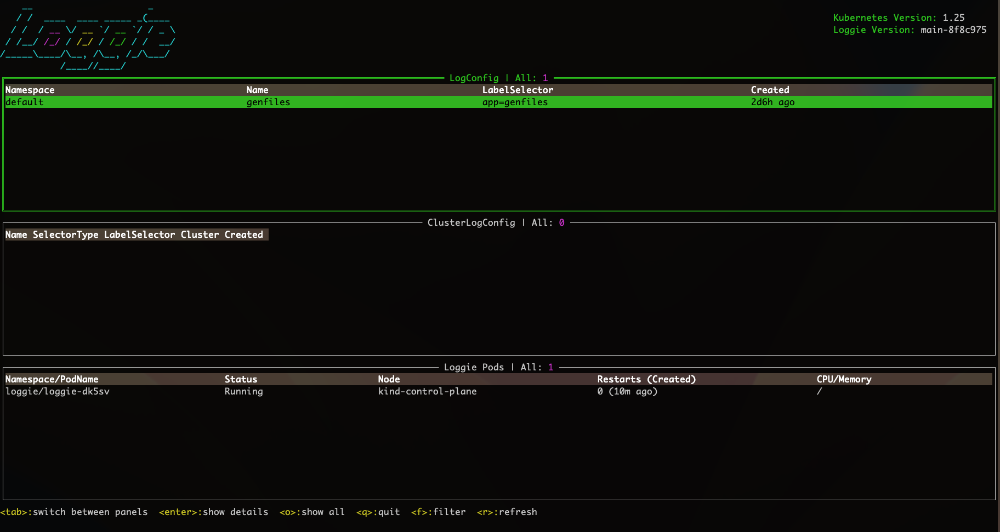

尝鲜初体验：使用Loggie和VictoriaLogs快速构建新一代的日志系统¶
如果你熟悉Prometheus，想必你肯定也知道VictoriaMetrics，这款越来越流行的监控项目，可作为Prometheus的增强或者平替。VictoriaMetrics一个重要的亮点就是解决Prometheus在大规模Metrics指标数据量级下的存储问题。
同属于可观测性，当我们把眼光聚焦到日志领域，其实很久以来日志的一个痛点是也是存储。
当前日志存储的痛点¶
时下比较常见的一些开源日志存储项目有：Elasticsearch、Clickhouse、Loki等。当然，Elasticsearch和Clickhouse并非天生针对日志存储而设计，我们只是可以拿来存储日志数据而已。
比如Elasticsearch的核心是一个搜索引擎。针对日志存储的场景，可以全文检索是一大优势，但同时存在以下一些不足：
- 写入性能相对慢
- 资源占用较高
- 针对日志存储的压缩差
总体来说，Elasticsearch是一款历史悠久、被广泛使用的日志存储数据库，毕竟当年ELK的概念深入人心。但是，在当前降本增效的大背景下，很多企业还是会对Elasticsearch占用的机器资源比较敏感，如果只用于存储大量的运维类日志，性价比还是偏低。
所以前两年Grafana家的Loki横空出世，还是掀起了一点水花的，毕竟日志领域早就苦Elasticsearch久矣。
简单介绍一下Loki的优点：
- 天生就是为了存储日志设计
- 资源占用还不错
- 引入了日志流Log Stream的概念
大半年前，我们公司内部有部门开始尝试使用Loki存储一些系统日志。但总会遇到一些小问题，并不是很让人放心。除此之外，Loki的不足之处还有：
- 没有实际意义上的全文检索，所以关键字查询等可能会比较慢
- 不支持独立设置检索的label，可能导致性能等一系列问题
当然，Loki还是一个相对年轻的项目，我们可以理解这些稳定性、性能、设计上的问题可能是发展早期的阵痛。
但是，貌似很多人已经等不及了。
姗姗来迟：VictoriaLogs的优势¶
最近VictoriaMetrics发布了预览版的VictoriaLogs，类似Loki专门用于存储日志。鉴于VictoriaMetrics的良好名声，还是让大家对这条搅局的「鲶鱼」充满了一定的期待。
VictoriaMetrics为什么要入局搞VictoriaLogs呢？
其实从2020年的这个Issues开始：https://github.com/VictoriaMetrics/VictoriaMetrics/issues/816
VictoriaMetrics就有了研发VictoriaLogs的想法。从该issues的讨论中我们可以看出，大家对Loki还是有点微辞的，比如说存储依赖S3（本地存储不支持分布式），比如说性能。
这里节选一下issues里的吐槽：
almost 2 years passed and Loki is still unusable for scenarios with real logging data. Trying to query anything hitting more than 50k logs is exploding servers :)
不用翻译了，隔着屏幕我们都能感受到这个用户的强烈不满。
时隔两年多，VictoriaLogs终于正式来到了我们面前，那VictoriaLogs到底有哪些优势，又能解决日志存储领域的哪些问题呢？
这里我简略总结几点，感兴趣的同学可以在官方文档中寻找更多答案。
- 兼容Elasticsearch bulk接口
- 支持横向和纵向扩容
- 资源占用低
- 支持多租户
- 继承（抄）了Loki的log stream概念，但有一些优化
- 支持全文检索，提供了简单强大的LogsQL查询语法
先说VictoriaMetrics家的一大特色：兼容性。 VictoriaLogs直接支持了Elasticsearch bulk API，由于市面上几乎所有的日志采集Agent都支持发送至Elasticsearch，所以可以基本做到无缝对接和迁移，无需让这些Agent都去研发增加新的输出源。（这里确实要吐槽一下Loki，连个公开的客户端Client SDK包都没有提供，这让人怎么对接呢）
但是支持横向和纵向扩容，这点由于现在VictoriaLogs预览版只提供了单节点的，暂时还无法确认。
另外在 资源占用 方面，我们可以直接看VictoriaLogs提供的benchmark结果。对比Elasticsearch，从下图可以看出：
- 平均内存
- Elasticsearch：4.4 GiB
- VictoriaLogs：144 MiB
- 平均磁盘占用：
- Elasticsearch：53.9 GB
- VictoriaLogs：4.20 GB

内存和磁盘占用确实要低太多，基本上是差了一个数量级，如果存储量大的话，能省下不少台服务器的钱，无疑是现在降本增效患者的一大福音。
VictoriaLogs同样引入了 log stream 的概念，结合多租户的能力，似乎可以做到日志存储场景下的性能、资源占用权衡下的最优解，这也是VictoriaLogs区别于Elasticsearch等非专门为日志存储设计数据库的核心因素。
所以在使用VictoriaLogs之前，请务必先好好了解一下log stream。
log stream是什么呢？
简单来说，表示应用（服务）的一个日志实例。至于这个日志实例的具体粒度，可以由我们自行设计和掌控，但是不建议整体数量特别大。
举例说明，一个日志实例可以为：
- 主机部署下一个Linux进程产生的日志
- Kubernetes上一个应用运行的Pod的Container容器产生的日志，或者更细粒度，容器里的一个日志文件也可以表示一个log stream
log stream设计的关键是可以被唯一标识，这样可以确定日志在分布式系统中产生的位置，比如在哪个节点的哪个容器的哪个日志文件中。
一个log stream由多个label来标识，所以其实这里和Prometheus metrics的label类似，我们可以拿Prometheus中的一些概念类比：
- job label：表示多个副本上面的应用，比如deployment名称
- instance label：表示哪个进程和端口号产生的metrics
在VictoriaLogs中也可以自己设计一些类似的label，加在日志采集的元信息中，这样还能用于后续的日志和指标的关联和检索。当然在实际的应用中，我们还可以增加诸如：环境、数据中心、namespace等的label。
如果你之前了解Loki，肯定会想说，Loki不也是这样设计label的吗？
对，但是等你深入用过Loki后，可能会遇到这样的坑：当发送的日志labels里携带了一些频繁修改的字段，比如说一条日志，将其中的偏移量offset字段作为一个label，大概如下所示：
{
"message": "xxx",
"timestamp": "",
"logconfig": "foo",
"podname": "bar",
"offset": 20,
...
}
Loki会将所有labels的值作为一个唯一的log stream标识，比如上面的内容就会将{logconfig: "foo", "podname":"bar", "offset": 20}作为一个log stream。由于在同一个文件中，offset会随着采集的每行日志都在增加，因此会导致log stream个数无限增长，对Loki造成巨大的压力。
为了规避这类问题，VictoriaLogs设计上就将stream label和普通label做了区分，比如以上这种场景，我们只需要将logconfig和podname作为stream label即可，offset则作为普通的label。
了解了stream label后，我们就可以更好的理解以下VictoriaLogs中的数据格式：
_msg：日志内容字段_time：时间字段_streamlabel：在同一个log stream中，label不变- 普通labels：在同一个log stream中可以变化，比如level, traceId等等
真实世界：使用Loggie采集日志至VictoriaLogs中¶
下面我们开始真实的体验一下如何使用Loggie和VictoriaLogs快速构建一套日志系统。
1. 部署VictoriaLogs¶
可执行以下命令：
helm repo add vm https://victoriametrics.github.io/helm-charts/
helm repo update
helm install vlsingle vm/victoria-logs-single -nvictoria-logs --create-namespace
更多的详情可参考helm chart部署。
这里我们设置部署的namespace为victoria-logs，如果修改了该namespace名称，下面的一些配置也请同步修改。
2. 部署Loggie¶
如果你还不知道Loggie，请进这里。
为了方便起见，我们在Loggie catalog中提供了一个适配VictoriaLogs的部署配置。
VERSION=v1.4.0
helm pull https://github.com/loggie-io/installation/releases/download/$VERSION/loggie-$VERSION.tgz && tar xvzf loggie-$VERSION.tgz
# 从catalog中下载适配victoriaLogs所用的部署配置values文件
wget https://raw.githubusercontent.com/loggie-io/catalog/main/scenarios/victoriaLogs/values.yml
# 指定该values文件部署Loggie
helm install loggie ./loggie -nloggie --create-namespace -f values.yml
3. 生成和采集日志¶
部署完了VictoriaLogs和Loggie后，创建一个测试用的Deployment genfiles用于产生日志。
wget https://raw.githubusercontent.com/loggie-io/catalog/main/common/genfiles/deployment.yml
kubectl apply -f deployment.yml
然后创建一个相匹配的日志采集任务，告诉Loggie要去采集这个Deployment容器中的日志文件：
wget https://raw.githubusercontent.com/loggie-io/catalog/main/scenarios/victoriaLogs/genfiles_logconfig.yml
kubectl apply -f genfiles_logconfig.yml
这里我们重点关注下genfiles_logconfig.yml中的sink部分配置：
sink: |
type: elasticsearch
hosts: [ "vlsingle-victoria-logs-single-server.victoria-logs.svc:9428/insert/elasticsearch/" ]
parameters:
_msg_field: "body"
_time_field: "@timestamp"
_stream_fields: "logconfig,namespace,podname,containername"
- 直接使用的Elasticsearch类型的sink，因为VictoriaLogs兼容bulk接口
- 这里将hosts改成了VictoriaLogs的url，请注意后面加了固定的path:
/insert/elasticsearch/ - 新增了parameters字段，兼容一下VictoriaLogs所需日志的格式，同时配置了stream labels字段
_msg_field：表示使用哪个日志字段当作msg内容字段，Loggie默认的日志内容字段为body，如果你已经在用Loggie并且修改成了其他字段，请对应修改_time_field：表示使用哪个字段作为时间字段_stream_fields：表示使用哪些字段作为log stream的唯一标识label。
在本示例中，我们在sink端发送的日志格式大概如下所示：
{
"body": "2023-07-04 02:58:18.014 INF cmd/subcmd/genfiles/genfiles.go:57 > 1000 TqrccSCPzRUYRP PJ MlvgdAluEpIoRIRyzjZoNk",
"containername": "genfiles",
"namespace": "default",
"podname": "genfiles-66f5c86fdb-tjpzr",
"@timestamp": "2023-07-04T02:58:21.905Z",
"offset": 1092798,
"cluster": "test",
"logconfig": "genfiles",
"nodename": "kind-control-plane",
"filename": "/var/lib/kubelet/pods/c7b2da94-b152-414e-a7d8-1951e9d4f09a/volumes/kubernetes.io~empty-dir/logs/loggie.log"
}
可以看到，这里将log stream的粒度定为了Pod容器级别，所以_stream_fields设置为了cluster,logconfig,namespace,podname,containername。
现在我们模拟产生一点日志：
# 进入到genfiles容器中
kubectl exec -it $(kubectl get po -l app=genfiles -o jsonpath="{.items[0].metadata.name}") bash
# 产生一点日志
./loggie genfiles -totalCount=1000 -lineBytes=1024 -qps=0 \
-log.maxBackups=1 -log.maxSize=1000 -log.directory=/tmp/log -log.noColor=true \
-log.enableStdout=false -log.enableFile=true -log.timeFormat="2006-01-02 15:04:05.000"
关于loggie生成日志的genfiles子命令，更多的使用方式可以参考这里。
正常情况下，Loggie会很快采集这些日志，然后发送至VictoriaLogs。
当然我们也可以进入Loggie terminal控制台确认一下采集进度：
kubectl -nloggie -it exec $(kubectl -nloggie get po -l app=loggie -o jsonpath="{.items[0].metadata.name}") -- ./loggie inspect


如上图所示，文件采集进度为100%，表示已经采集完毕，并且发送日志到了VictoriaLogs中。
Loggie terminal具体的操作方式，也可以参考我们的日志采集快速排障指南。
接下来，我们就可以使用VictoriaLogs内置的UI查看采集的日志了。
LogsQL和日志查询¶
由于本地和Kubernetes集群内部网络不通，简单起见，我们直接port-forward一下：
export POD_NAME=$(kubectl get pods --namespace victoria-logs -l "app=server" -o jsonpath="{.items[0].metadata.name}")
kubectl --namespace victoria-logs port-forward $POD_NAME 9428
然后本地访问以下页面：[http://localhost:9428/select/vmui/](http://localhost:9428/select/vmui/)
VictoriaLogs当前提供了一个简单的UI页面，可用于查询日志。为了演示如何查询刚才采集的日志，我们先快速了解一下查询语法。
考虑到最大化查询的性能，建议一般写LogsQL规范性套路为：
1. 确定log stream
_stream这里的过滤字段，就是刚才在sink上parameters._stream_fields配置的，比如查询哪个日志采集任务，哪个Pod等。示例中我们根据log stream中的logconfig label查询了刚才创建的日志采集任务下的所有日志，LogsQL如下：
_stream:{logconfig=genfiles}

如果logconfig匹配了很多的Pod，这里还可以加上对应的podname等字段来进一步过滤。比如：_stream:{logconfig=genfiles, podname="genfiles-66f5c86fdb-mrfzc"}。
2. 加上时间区间
接着我们还可以增加时间区间，进一步缩减返回的日志条数。
LogsQL: _stream:{logconfig=genfiles} _time:[now-1h,now]
请注意，这里通过空格来间隔，另外_stream和_time为内置的字段，无先后顺序区分。
3. 进一步的过滤
上面我们让Victoria先快速确定一个log stream的日志范围，然后在此基础上，进行关键字匹配，字段过滤等其他复杂的日志检索。
比如：
- 关键字检索：_stream:{logconfig=genfiles} _time:[now-1h,now] <关键字>
- 根据普通的label字段来过滤：_stream:{logconfig=genfiles} _time:[now-1h,now] nodename:
kind-control-plane - 还可以加上逻辑条件：AND, OR, NOT
…
LogsQL的功能还是比较多的，更详细的LogsQL使用姿势，可以参考官方文档。
总结¶
虽然VictoriaLogs只发布了一个预览版，但是从当前的设计和体验来看，还是要优于Loki的，毕竟站在了Loki的肩膀上，有后发优势。
但是软件设计没有银弹，真实的世界里，是否选择使用某个项目，最重要的还是适不适合，而不在与项目本身功能是否强大。
可以预料到的是，在很长的一段时间内，Elasticsearch这些老牌们还是会占据大部分的市场，因为在企业中，很多都有已经长期稳定运行的Elasticsearch或者Clickhouse，同时还有相应的运维人员和配套支撑。
那什么情况适合VictoriaLogs呢？
如果你们正在从头开始搭建自己的日志系统，愿意接受新事物的潜在风险，对VictoriaLogs的未来充满信心，那么还是值得一试的。
正是由于VictoriaLogs这些新星们进场，让日志领域更加内卷的同时，也让广大的人民群众受益。毕竟我们多了一个不错的选择，国内的「开源定制化开发」市场又有更多的活可以干了。
如果你有更多关于VictoriaLogs的想法可以交流，欢迎扫码，加入Loggie交流群，讨论所有和日志相关的技术。